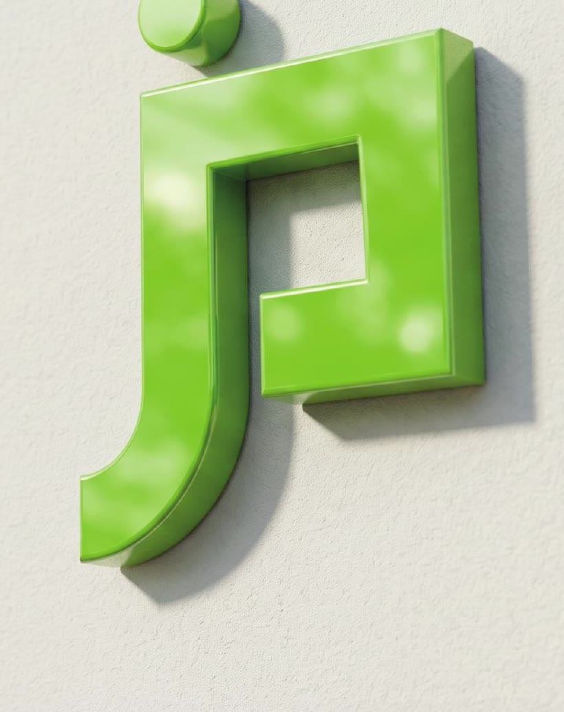
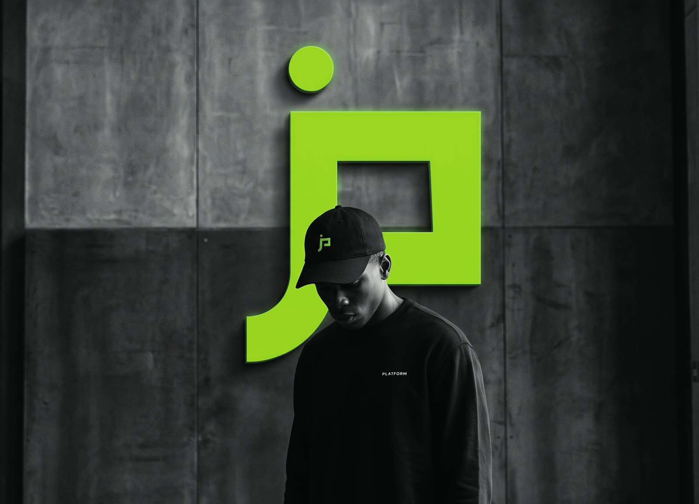

Um único parceiro criativo e técnico para o seu site, suas redes, seus impressos e seus eventos — com a mesma cara em todos.
Nascemos para eliminar a distância entre o planejamento visual e a entrega prática. Conectamos design, branding, publicidade online e offline, eventos e sites em *um único sistema vivo.*

Identidade sólida, campanha que converte, evento ambientado e site rápido — feitos pelo mesmo time, com o mesmo padrão.
Conta o que você precisa — identidade, campanha, evento ou site. A gente responde com um caminho claro e prazo.